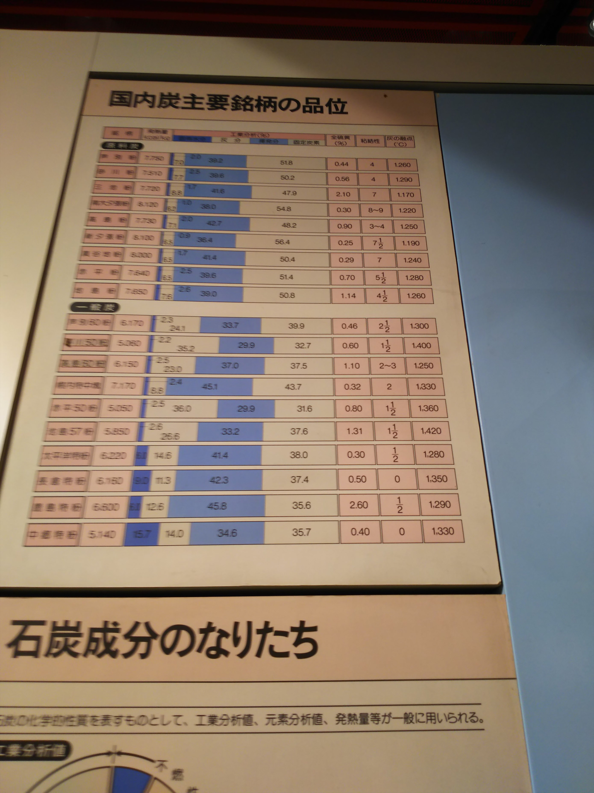
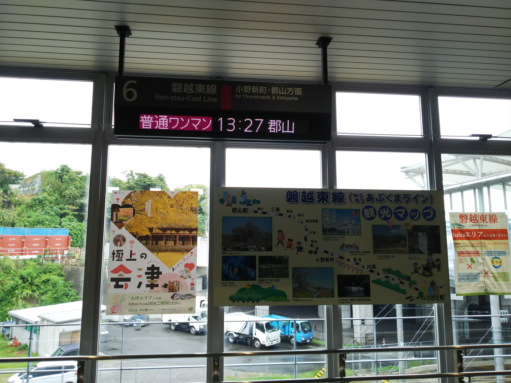
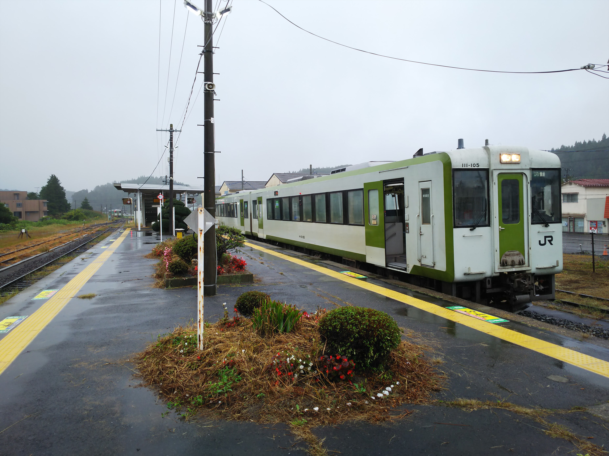
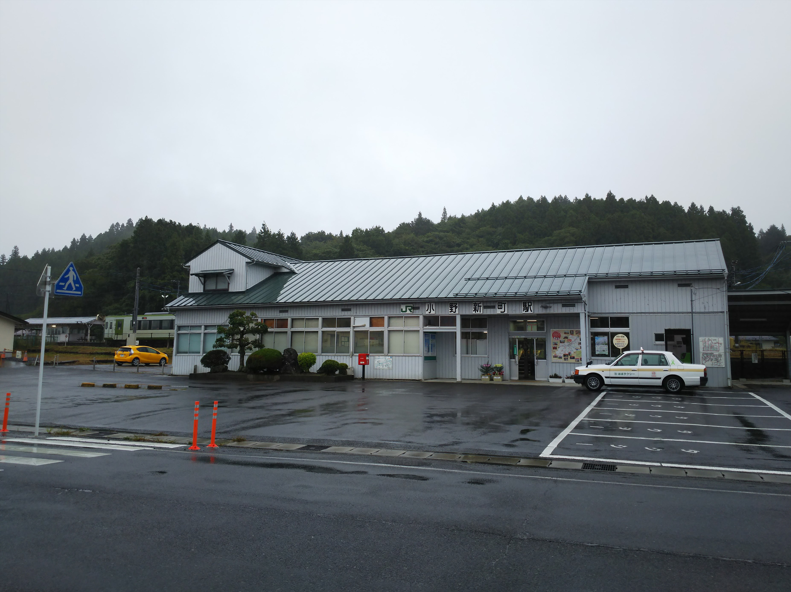

2024（R5） 10月5日 いわき
夏は青春１８旅が出来なかったので、取り返すべく、秋の乗り放題切符で鈍行旅に出発です。
朝の兵庫駅。ここから鈍行旅をスタートするのは初
めてです。
伊吹山が綺麗に見えます。
もうロングシートの車内で食事するのも気が引ける
ので、浜松駅の駅そばでうどんを食べましたが、こ
れがまずい。そこそこの値段したっちゅうのに。
とイヤな気分になって熱海行を待ってたら、き、キ
ター！！待望の３１３系８０００台。とうとう巡り
合えました。
セントラルライナーの有料席用につくられた車両な
ので、椅子がいいです。車端部のボックス席エリア
に陣取ります。
旅のお伴は、通るたびに気になってた、豊橋駅の売
店で買った「大あんまき」。食べたら、そないにお
いしくはなかったっす。
残念ながら富士山は見えず。
さて、品川に到着です。京急側の工事やリニアの工
事で、まだまだ変わっていく感じですが、今回はこ
こから常磐線に乗り込みます。始発駅からなのでボ
ックス席をゲットです。
水戸で乗り換え、ようやく湯本駅に到着しました。
ホームに足湯設備があるけど、冷たかった・・・
降り立ったのは３年ぶりぐらいかな
駅名の通り、温泉地です。さっそく歩いて１０分ほ
どの「さはこの湯」でひとっぷろあびました。
一人暮らししてからずっとシャワーだったので、湯
舟につかるのは久しぶり。やっぱいいっすね。
しかし脱衣所に入ったら目の前に全面もんもんのお
っさんがいたのにはびっくりしました。
３つ共同浴場があって、一番地元向けっぽいところ
に行きたかったんですが、時間的に無理でした。
本日は、いわきに宿泊。
さて、翌日。まずは行ったことのない小名浜に行っ
て見ます。
夜には気づかなかったですが、寂れていく駅前ばっ
かりのこの国にしては珍しく、駅前に大きな商業施
設が出来てました。
駅前を歩いてると、えっ？ちくわパン？
おいしいんかいな。
今は貨物鉄道となった小名浜臨海鉄道が昔通ってた
ルートをたどります。
いわきから南下して、泉駅にやってきました。
貨物の駅がありますね。

駅舎は工事中です。
駅におりたつと、面白いモニュメントがありました。
鳥は鵜です。
近くの照島が、断崖絶壁の小さな島で国の天然記念
物に指定されてるとのこと。
小名浜までバスで向います。
このバス、発車してからドア閉めたで。すごいな。
終点の小名浜車庫まで乗りましたが、中心部からは
かなり外れにあって、焦りました。
運よく、少しの待ち時間で折り返しのバスがあった
ので、「小名浜案内所」まで戻ります。
どんな「案内所」があんねんと思いましたが、それ
らしきものはなかったです。
ちょっと歩くと海です。右のガラスの建物はアクア
マリンふくしまという水族館です。

震災後、小名浜駅は泉駅よりに移動したとのことで
跡地はイオンモールになってました。
貨物駅も見てみたかったのですが、時間がなく、泣
く泣くバスに乗り込みます。
さて、バスで湯本温泉まで戻ってきました。このエ
リア、常磐炭鉱があったところで、それ関係の博物
館が駅の近くにあるといいうので行って見ます。
その名も「ほるる」。石炭と化石がテーマです。
敷地内にＳＬも保存されてます。
入場券買おうと自動販売機の前に立ったら、電子マネーのみ、て。
なめとんか。
入ってすぐのところにちゃんとジオラマもありますね。

最近、岩佐模型さんが鉄道模型で石炭ストーブの香
りまで再現されようとしています。
この情報、ぜひ参考にしてください！
時代ごとの掘削の変遷が人形付で紹介されてます。
このおっちゃん、何してるかわかりますか？
こういった機器で、トロッコ用のレールのカーブを
作ってるそうです。大変やで。
ドカベン読んでて、いわき東高校のところで炭鉱閉
山の話がありましたが、ようやく実感できました。
湯本駅に戻ります。道沿いに銅像が多いんですが、
ここは野口雨情のふるさとだそうで、その作詞のイ
メージの銅像みたいです。

さて、いわきに戻って、ここからは鈍行旅です。
久々に乗るのは磐越東線。

途中の小野新町で長時間停車しました。最近、こう
いうゆったりした停車もないのよね～。
「おのしんまち」やないっすよ。
ここにもジオラマがあった！


郡山からはこちらも久々の水郡線に乗り込みます。
この両線、わざわざ乗りに行く以外にのることなん
てない場所を走ってるので、もうこれが最後の乗車
のような気がする。
もっと平野部の単調な景色の中を走るのかと思って
たら、意外と山がちのところも走ってました。
残念ながら途中で日没です。水郡線は珍しく支線のある線なんですが、もう夜なので泣く泣く断念。
ここが支線の分岐駅、常陸大子駅です。
今日は相模原で泊りです。旧常磐線色の電車がお出
迎え。
★ ★ ★ 続 く ★ ★ ★